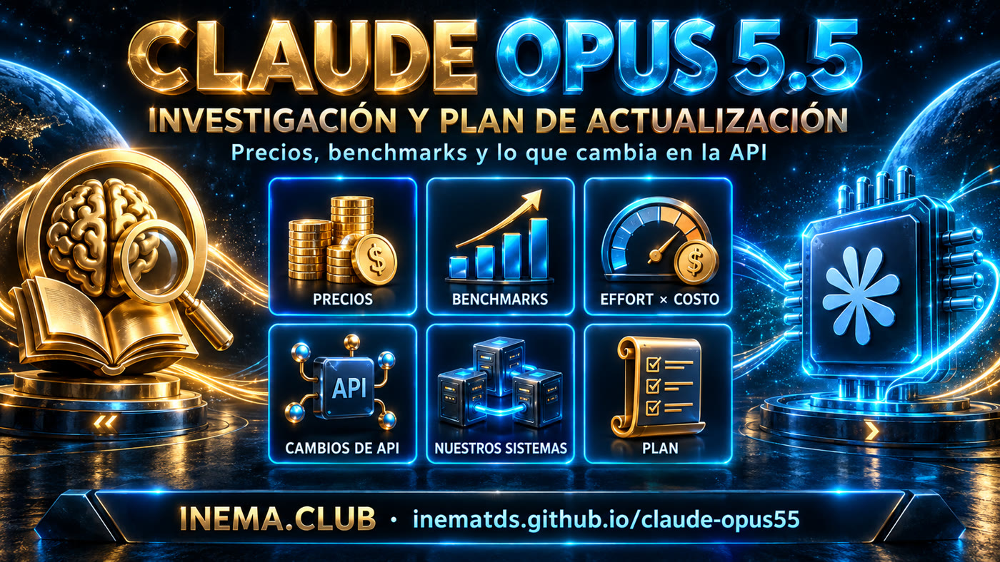

Precios, benchmarks, qué cambia en la API y qué actualizar en cada sistema para usar el nuevo modelo.

Con cuatro cambios de API que rompen código antiguo. API ID claude-opus-5-5, 1M de contexto, 128K de salida, effort predeterminado medium.
US$ 4/20 frente a 5/25 por millón de tokens
US$ 0,20 frente a 0,50
aproximado; estimación de Anthropic con la configuración predeterminada
Opus 5: 79,2 (system card, effort max)
+14 puntos sobre Opus 5
1.º puesto en Artificial Analysis el 22/09/2026
anthropic.claude-opus-5-5), Vertex, Foundry, Claude Platform on AWS y GitHub Copilot.effort, y el valor predeterminado bajó de high a medium.opus apunta a claude-opus-5-5 (probado el 22/09). Ningún sistema fija el nuevo ID todavía.Y con el mayor descuento de caché de la línea Opus.
| Modelo | Entrada | Salida | Cache read | Batch (in/out) | Fast (in/out) |
|---|---|---|---|---|---|
| Fable 5.1 | 10 | 50 | 0,25 | 5 / 25 | — |
| Opus 5.5 | 4 | 20 | 0,20 | 2 / 10 | 8 / 40 |
| Opus 5 | 5 | 25 | 0,50 | 2,50 / 12,50 | 10 / 50 |
| Opus 4.8 | 5 | 25 | 0,50 | 2,50 / 12,50 | 10 / 50 |
| Sonnet 5 | 2 | 10 | 0,20 | 1 / 5 | — |
| Haiku 4.5 | 1 | 5 | 0,10 | 0,50 / 2,50 | — |
US$ por millón de tokens. Fuente: página oficial de precios de Anthropic [PR]. El fast mode es un research preview y solo existe en la Claude API.
Y pierde frente a GPT-6 Astra en tres.
max (Terminal-Bench en xhigh), con los safeguards de producción activados. Varios los ejecutaron socios (Cognition, Cursor, Zapier, Artificial Analysis).Por menos de una cuarta parte del costo por tarea, según Artificial Analysis.
medium. Si no define el effort, baja un nivel respecto de Opus 5. En las pruebas de Anthropic, 5.5 en medium supera a Opus 5 en high en código y trabajo de conocimiento.medium marca 54,6% y max 54,4%. En CursorBench, pasar de medium (52,5%, ~US$ 3 por tarea) a max (57,8%) aporta unos 5 puntos, pagando más por tarea.xhigh y max. Deje margen en max_tokens (64K es el punto de partida sugerido para turnos largos de agente).Prueba de terceros (24/09/2026): el mismo /goal en Claude Code en todos los niveles, convirtiendo ~105 GB de grabaciones de un evento en una conferencia 3D explorable. Una ejecución por nivel, con el juicio visual del autor y costo estimado a precio de API.
| Effort | Tiempo | Costo (est.) | Tokens | Checks | Resultado |
|---|---|---|---|---|---|
low | 16m43s | US$ 3,91 | 191k | 22 | Funciona, pero con marca equivocada y videos estáticos |
medium | 1h13m | US$ 12,44 | 419k | 23 | El mayor salto de calidad |
high | 1h07m | US$ 16,31 | ~559k | 22 | Más detalle y narrativa |
xhigh | 1h30m | US$ 25,92 | ~723k | 34 | Preferido por el autor |
max | 2h28m | US$ 50,38 | 1,18M | 51 | 2× el costo de xhigh y con más bugs |
| ultracode | 1h35m | US$ 18,69 | ? | 42 | No creó workflows; funcionó como xhigh |
El experimento de GPT-6 Astra con el mismo diseño llegó al mismo patrón: el nivel máximo no fue el preferido, y allí ganó medium. Gráficos, los ocho patrones y los límites de los datos están en Esfuerzo en la práctica.
Usar Opus 5.5 en medium es la mejor opción para el día a día. Sube a high cuando haga falta más razonamiento y deja xhigh para casos extremos. Lo mismo vale para GPT-6 Astra. max queda fuera. Es una opinión registrada, no una regla.
Respecto de Opus 5. Quien viene de 4.x también hereda las restricciones anteriores.
| # | Qué cambia | Error | Cómo migrar |
|---|---|---|---|
| 1 | El thinking no se desactiva. {type:"disabled"} y budget_tokens se rechazan con cualquier effort. | 400 | Omitir thinking (o usar adaptive) y controlarlo con output_config.effort. Para baja latencia, low. |
| 2 | Sin forced tool use. tool_choice any/tool se rechazan, también en Batches y count_tokens. | 400 | auto + strict: true + una instrucción en el prompt, y comprobar que la llamada ocurrió. Para extraer JSON, structured outputs. |
| 3 | Preserved thinking. Los thinking blocks quedan ligados al modelo y a la conversación. Las cuentas creadas desde el 31/08/2026 reciben un 400 si se edita el historial. | 400 / descarte | Historial solo por adición. Un mensaje system en medio de la conversación en lugar de editar el system. O el beta thinking-binding-controls con drop_block. |
| 4 | Computer use solo mediante computer_toolset_20260801. computer_20251124 se rechaza (API y Google Cloud). | 400 | Cambiar la declaración de la tool y el bucle del agente (la acción pasa a ser el name del bloque, varios por turno). |
| 5 | El texto entre tool calls llega ahora como thinking blocks de progreso, vacíos con el display predeterminado. | ninguno | thinking.display: "updates" (beta) o "summarized", y mostrar esos bloques. |
# Antes: aceptado en Opus 5, 400 en Opus 5.5 client.messages.create(model="claude-opus-5", max_tokens=16000, thinking={"type": "disabled"}, temperature=0.4, messages=[...]) # Después: thinking siempre activado, el effort es el control client.messages.create(model="claude-opus-5-5", max_tokens=16000, output_config={"effort": "low"}, messages=[...])
temperature, top_p y top_k con valores no predeterminados dan 400 desde Opus 4.7.El primer Opus con clasificadores de cyber, bio y anti-extracción del razonamiento (reasoning_extraction). Un rechazo vuelve como HTTP 200 con stop_reason: "refusal". La recomendación es activar el fallback del lado del servidor (fallbacks: "default"), sabiendo que el modelo de fallback funciona sin los thinking blocks de 5.5. El system card no cita ningún nivel ASL y señala salvedades: el modelo sigue más instrucciones maliciosas pegadas por el usuario y acepta más afirmaciones de autorización que no se pueden verificar.
Inventario de solo lectura del servidor el 22/09/2026: modelo, forma de llamada, qué hacer y prioridad.
claude instalados. ~/.local/bin/claude es la 2.1.280 y /usr/bin/claude es la 2.1.63, de un npm global antiguo. Las 17 yt-scheduler*.service y dos crons ponen /usr/bin primero en el PATH, así que ejecutan la versión antigua, que usa claude-opus-4-6 por defecto. Cambiar el modelo en la configuración no llega a ellos.| Sistema | Hoy | Cómo llama | Qué hacer | Prioridad |
|---|---|---|---|---|
| yt-pub-lives (17 schedulers) | claude-opus-4-6 (predeterminado de 2.1.63) | claude -p, CLI antiguo | Corregir el PATH de las units (o actualizar /usr/bin/claude) y pasar --model opus de forma explícita. | ALTA |
| openpcbotv2 | claude-opus-5, effort low | Agent SDK 0.2.50 | Actualizar el SDK, cambiar a claude-opus-5-5 en los agent.yaml, mantener el effort explícito e incluir xhigh en el tipo. | ALTA |
| openpcbotv3 | alias opus → ya es 5.5 | CLI 2.1.280 | Nada en el modelo. Comprobar que el effort es explícito en el yaml (el predeterminado de 5.5 es medium). | OK |
| openpcbotv3 (tiers de OpenRouter) | haiku-4.5 / sonnet-5 | OpenRouter, temperature 0.4 | Si el tier premium pasa a Opus 5.5, quitar temperature. Corregir la tabla de precios de opus-5 (dice 15/75; lo correcto es 5/25). | MEDIA |
| cerebro-vip (API de chat) | opus-4.8, sonnet-5, fable-5 (predeterminado glm-5.2) | OpenRouter, temperature 0.2 | Añadir Opus 5.5 a la lista y no enviar temperature a los modelos Claude 4.7+. | MEDIA |
| Crons de cerebro-vip y telegramtopicosindex | alias sonnet | CLI 2.1.63 | La misma corrección de PATH que los schedulers. | MEDIA |
| inemaccvbot (detenido) | claude-opus-5, effort low | CLI | Cambiar a claude-opus-5-5 cuando se reactive. | MEDIA |
| musicavideo | claude-fable-5 | CLI | Decisión de producto: probar Opus 5.5, que en el system card supera a Fable 5.1 en la mayoría de las pruebas y cuesta un 60% menos. | MEDIA |
| inemaccbot (10 perfiles) | alias sonnet, effort low | CLI | Nada por ahora. Sonnet 5.5 llega en semanas y el alias se actualiza solo. | BAJA |
| Portal (chat del sitio) | haiku-4.5 | OpenRouter | Nada por ahora. Esperar a Haiku 5.5. | BAJA |
| iccmonit | claude-haiku-4-5-20251001 | SDK de Python | Mantener. Si algún día pasa a Opus 5.5, leer la respuesta por type (hoy usa content[0].text, que se rompe con thinking). | BAJA |
| claudebot, inemabot, dsh-sandbox | sonnet-4-6, opus-4-6, sonnet-4.5 | varios | Legado detenido. Actualizar solo si vuelve a funcionar. | BAJA |
No usan Claude: inemanews, inemaeventos y las novedades del portal (Groq), webmcp-readiness, inemacbot, agentehermes, dsh-orchestrator y cerebro-pro.
Cinco pasos con comandos reales. El orden importa: sin el paso 1, los cambios de modelo no llegan a los servicios que ejecutan el CLI antiguo.
Averiguar qué claude ve cada servicio y hacer que todos usen la versión actual.
# ver las dos instalaciones which -a claude; /usr/bin/claude --version; ~/.local/bin/claude --version # opción A: actualizar el npm global antiguo npm i -g @anthropic-ai/claude-code@latest # opción B: en las units yt-scheduler*.service, poner ~/.local/bin primero en el PATH Environment=PATH=/home/nmaldaner/.local/bin:/usr/local/bin:/usr/bin:/bin systemctl --user daemon-reload && systemctl --user restart 'yt-scheduler*'
El alias opus sigue al modelo más nuevo. Prefiera el alias a fijar un ID; fíjelo solo donde importe la reproducibilidad.
# qué modelo respondió de verdad claude --model opus -p "ok" --output-format json | jq -c '.modelUsage|keys' # el 22/09/2026: ["claude-opus-5-5"]
En openpcbotv2, actualizar primero el Agent SDK y después cambiar el modelo en los agent.yaml, manteniendo el effort explícito.
# 1) SDK actual (el 0.2.50 trae un CLI 2.1.50 integrado) npm i @anthropic-ai/claude-agent-sdk@latest # 2) agents/*/agent.yaml model: claude-opus-5-5 effort: low
Antes de apuntar a Claude 4.7 o posterior, quitar temperature, top_p y top_k del cuerpo de la petición. Falta comprobar el slug de Opus 5.5 en OpenRouter.
# sin temperature/top_p/top_k para Claude 4.7+ { "model": "anthropic/claude-opus-...", "messages": [...] }
Para cualquier código que llame a la API directamente (guía de migración de Anthropic).
| Tipo | Elemento |
|---|---|
| BLOQUEA | ID claude-opus-5-5 (Bedrock: anthropic.claude-opus-5-5). |
| BLOQUEA | Quitar thinking disabled y budget_tokens. Dimensionar max_tokens para thinking + respuesta. Leer los bloques por type. |
| BLOQUEA | Cambiar tool_choice any/tool por auto + strict, o structured outputs. |
| BLOQUEA | Computer use mediante computer_toolset_20260801. |
| BLOQUEA | Historial solo por adición (preserved thinking). Tratar stop_reason: "refusal" y activar el fallback. |
| AJUSTE | Definir el effort de forma explícita y medir low/medium antes de subir. |
| AJUSTE | Interfaces que mostraban texto entre tool calls: display: "updates". |
| AJUSTE | Volver a medir costo y latencia. Revisar los prompts escritos para Opus 5 (verbosidad, verificación). |
Fechas de la API, según las release notes de Anthropic.
Investigación realizada el 22/09/2026, día del lanzamiento: documentación oficial de Anthropic, cobertura de terceros y un inventario local de solo lectura. Cada gráfico usa una única tabla de origen. Los números autoinformados están marcados como tales.